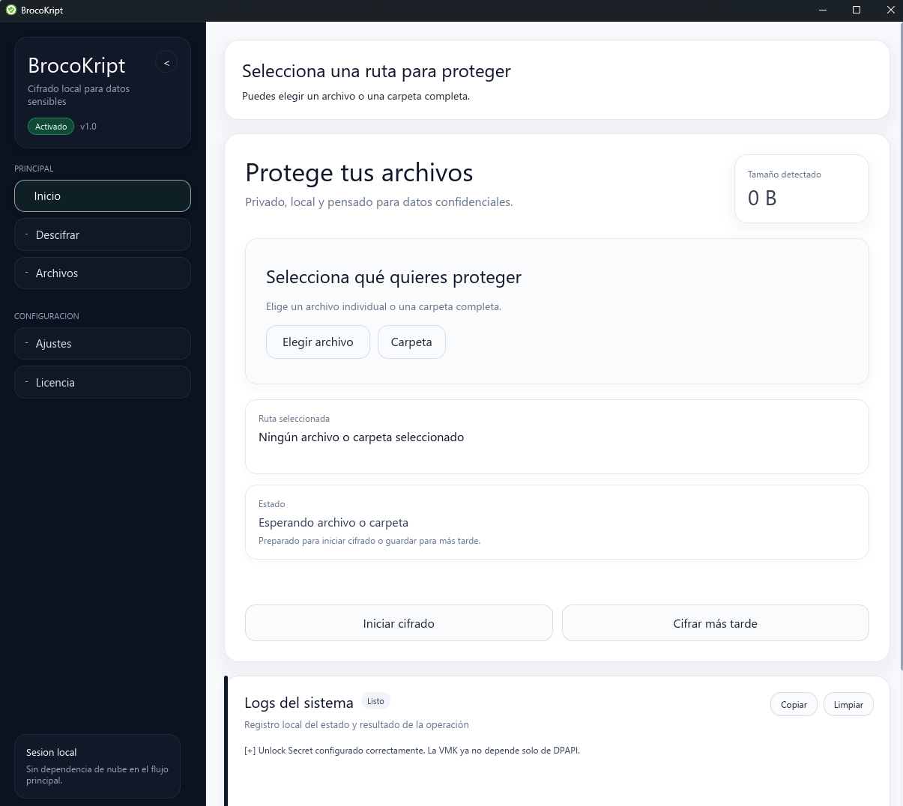

Cifrado y descifrado
La aplicación permite proteger archivos y recuperarlos después desde una interfaz directa.
BrocoKript es una aplicación para proteger archivos locales de forma clara, sin pasos complicados y con dos versiones según el nivel de uso que necesites.

Qué es BrocoKript
Su función es simple: eliges un archivo o carpeta, aplicas cifrado y lo recuperas cuando lo necesites con tu clave.
La aplicación permite proteger archivos y recuperarlos después desde una interfaz directa.
Las operaciones se realizan en tu equipo. Tú controlas dónde están tus archivos y tus claves.
Community y Pro comparten la misma base de cifrado; Pro añade comodidad y automatización.
Antes de usar
BrocoKript se entrega tal cual y no promete seguridad absoluta. Ningún software puede hacerlo. Si tienes dudas puntuales, puedes escribir a la comunidad o al Canal oficial.